인터넷정보관리사-2급 (2016-03-12 기출문제)
1과목: 인터넷의 이해
1. 다음 중 도메인에 대한 설명으로 가장 거리가 먼 것은?
- 한글이 포함된 도메인 이름의 경우 도메인 이름 길이가 최소 2글자 이상, 17글자 이하이어야 한다.
- 국내 차상위 도메인 중 RE는 연구기관, KG는 유치원을 의미한다.
- 도메인 네임과 디렉터리명은 대·소문자의 구별이 없다.
- ARPA 최상위 도메인은 오로지 인터넷 인프라와 관련된 목적만을 위해 사용된다.
(정답률: 29%)

2. 다음 중 인터넷 기술의 발전 순서를 연도순으로 알맞게 나열한 것은?
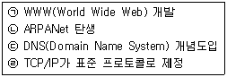
- ㉠→㉣→㉡→㉢
- ㉡→㉢→㉣→㉠
- ㉡→㉣→㉢→㉠
- ㉢→㉣→㉡→㉠
(정답률: 67%)
3. 다음 중 학교 전산망, 중·대규모 통신망에 해당되는 IPv4 Class와 네트워크 Address 범위가 알맞게 짝지어진 것은?
- A Class, 240.0.0.0~255.255.255.255
- A Class, 192.0.0.0~223.255.255.0
- B Class, 128.0.0.0~191.255.0.0
- B Class, 240.0.0.0~255.255.255.255
(정답률: 60%)
4. 다음 중 인터넷의 특징에 대한 설명으로 가장 거리가 먼 것은?
- 시·공간의 제약 없이 원하는 정보를 거의 실시간으로 제공받을 수 있다.
- 사이버 위협이 나날이 증가함에 따라 보안을 위한 중앙 통제기구가 존재한다.
- 인터넷 연결을 위해서는 IP 주소를 배정 받아야 한다.
- 누구나 인터넷에서 제공되는 서비스를 동일하게 이용할 수 있다.
(정답률: 75%)
5. 다음에서 설명하고 있는 인터넷 관련 문서로 알맞은 것은?
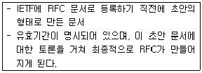
- FYI
- I-Ds
- IRG
- IMR
(정답률: 49%)
6. 다음은 리히텐슈타인 박물관의 웹사이트 주소이다. 국가최상위도메인(nTLD)을 참고하였을 때, 해당 박물관은 어느 국가에 위치하고 있는가?
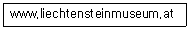
- 독일
- 네덜란드
- 호주
- 오스트리아
(정답률: 66%)
7. 다음 설명에 해당하는 인터넷 프로토콜이 알맞게 짝지어진 것은?
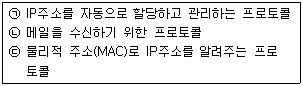
- ㉠-DHCP, ㉡-POP, ㉢-SNMP
- ㉠-TCP, ㉡-SMTP, ㉢-UDP
- ㉠-DHCP, ㉡-POP, ㉢-RARP
- ㉠-ICMP, ㉡-SMTP, ㉢-UDP
(정답률: 52%)
8. 다음 설명에 해당하는 용어로 가장 알맞은 것은?
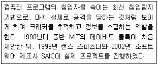
- 맨트랩
- 허니팟
- 디지털포렌식
- 멀웨어
(정답률: 29%)
9. 다음 중 클라우드 컴퓨팅 서비스 유형과 그에 대한 설명이 알맞게 짝지어진 것은?
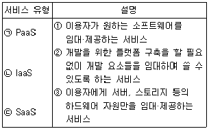
- ㉠-①, ㉡-②, ㉢-③
- ㉠-②, ㉡-①, ㉢-③
- ㉠-①, ㉡-③, ㉢-②
- ㉠-②, ㉡-③, ㉢-①
(정답률: 35%)
10. 다음 중 클라우드 컴퓨팅의 장점으로 가장 거리가 먼 것은?
- 언제 어디서든 자신이 작업한 문서 등을 열람하고 수정할 수 있다.
- 통신환경이 열악하더라도 안정적인 서비스가 가능하다.
- 컴퓨터 가용률이 높으며, 이는 그린 IT 전략과 일치한다.
- 컴퓨터 시스템의 유지·보수 비용을 절감할 수 있다.
(정답률: 62%)
11. 다음 중 웹서비스 업체들이 제공하는 각종 콘텐츠와 서비스를 융합하여 새로운 차원의 웹서비스를 만들어낸 것을 가리키는 용어는?
- 컨버전스
- 크리에이티브
- 오픈소스
- 매시업
(정답률: 35%)
12. 다음 중 폐쇄형 SNS로 가장 거리가 먼 것은?
- 카카오 그룹
- 네이버 밴드
- 비트윈
- 페이스북
(정답률: 67%)
13. 트위터의 용어 중, '리트윗'에 대한 설명으로 가장 알맞은 것은?
- 상대방의 트윗을 구독하기 위해 신청하는 행위
- 다른 사람의 트윗을 그대로 다시 트윗하는 행위
- 상대방과 내가 서로 트윗을 구독하고 있는 상태
- 상대방의 트윗을 구독하고 있는 상태
(정답률: 78%)
14. 다음 중 기업과 직원 간의 전자상거래 유형으로, 기업들의 복리후생을 대행해주거나 직원들에게 교육을 제공하는 등의 상거래를 가리키는 말은?
- B2G
- B2C
- B2B
- B2E
(정답률: 49%)
15. 다음 중 전자우편 관련 에러 메시지와 그에 대한 설명으로 가장 거리가 먼 것은?
- User Unknown : 수취인의 ID가 정확하지 않을 경우
- Connection Timed Out : 수취인 측의 메일 서버에 이상이 있어 접속시간이 경과될 경우
- Sender Refused : 수취인 측의 메일 서버에 접속이 불가능할 경우
- Network Unreachable : 네트워크의 문제로 메일이 전달되지 못할 경우
(정답률: 70%)
16. 다음 중 개인이나 기업에게 인터넷 접속 서비스, 웹 사이트 구축 등을 제공하는 회사를 가리키는 용어는?
- DRM
- ISP
- IDC
- eBIZ
(정답률: 49%)
17. 다음 보기에서 설명하고 있는 것은?
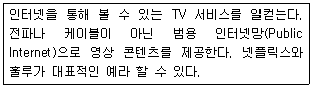
- PPV
- DMB
- OTT
- EPG
(정답률: 30%)
18. 다음 빈 칸에 들어갈 말로 알맞은 것은?
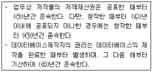
- ㉠-50, ㉡-70, ㉢-10
- ㉠-50, ㉡-70, ㉢-7
- ㉠-70, ㉡-50, ㉢-5
- ㉠-70, ㉡-50, ㉢-10
(정답률: 56%)
19. 다음 중 저작인격권에 속하는 권리로 가장 거리가 먼 것은?
- 공표권
- 성명표시권
- 공연권
- 동일성유지권
(정답률: 48%)
20. 다음 중 저작권법에 대한 용어의 정의로 가장 거리가 먼 것은?
- “배포”는 저작물 또는 음반을 공중의 수요를 충족시키기 위해 복제·배포하는 것을 말한다.
- “편집저작물”은 편집물로서 그 소재의 선택·배열 또는 구성에 창작성이 있는 것을 말한다.
- “프로그램코드역분석”은 독립적으로 창작된 컴퓨터프로그램저작물과 다른 컴퓨터프로그램과의 호환에 필요한 정보를 얻기 위하여 컴퓨터프로그램저작물코드를 복제 또는 변환하는 것을 말한다.
- “공표”는 저작물을 공연, 공중송신 또는 전시 그 밖의 방법으로 공중에게 공개하는 경우와 저작물을 발행하는 경우를 말한다.
(정답률: 47%)
21. 다음 중 사상, 신념, 정치적 견해, 건강과 같은 개인정보의 유형은?
- 사회정보
- 일반정보
- 민감정보
- 생활정보
(정답률: 52%)
22. 저작권법의 하나인 출판권은 특약이 없는 한 최초 출판일로부터 몇 년간 존속하는가?
- 3년
- 5년
- 10년
- 25년
(정답률: 46%)
23. 전자서명법 중, 공인인증기관이 발급하는 공인인증서에 포함되는 내용으로 가장 거리가 먼 것은?
- 가입자 이름
- 가입자 생년월일
- 가입자와공인인증기관이 이용하는전자서명방식
- 공인인증서의 유효기간
(정답률: 45%)
24. 다음 설명에 해당하는 이미지 파일의 종류는?
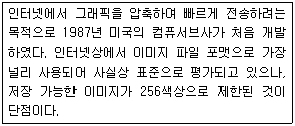
- GIF
- BMP
- JPG
- TIFF
(정답률: 40%)
25. 다음 설명에 해당하는 동영상 압축 재생기술은?
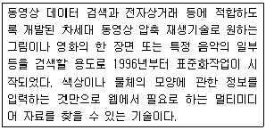
- MPEG2
- MPEG4
- MPEG7
- MPEG21
(정답률: 41%)
26. 다음 중 HTML 태그와 그에 대한 설명이 잘못 짝지어진 것은?
- <P> : 문단 바꿈 태그
- <BR> : 줄 바꿈 태그
- <PRE> : 여백이나 줄 간격 등을 고정시켜 주는 정형화된 문서 작성 태그
- <XMP> : 표제 부분에 들어갈 말을 정의하는 태그
(정답률: 32%)
27. 다음 설명에 해당하는 플러그 인은 무엇인가?
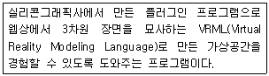
- Silverlight
- Cosmo Player
- QuickTime Player
- ShockWave Flash
(정답률: 50%)
28. 다음 컴퓨터의 주변장치 중, 성격이 다른 것은 무엇인가?
- 디지타이저
- 바코드 판독기
- 스캐너
- 플로터
(정답률: 60%)
29. 운영체제의 구성 중, 제어 프로그램에 해당하는 것으로 가장 거리가 먼 것은?
- 감시 프로그램
- 서비스 프로그램
- 데이터 관리 프로그램
- 작업 관리 프로그램
(정답률: 59%)
30. 운영체제의 평가기준 중, 시스템을 얼마나 빨리 사용할 수 있는가를 나타내는 척도는?
- 처리능력 향상
- 반환시간 단축
- 신뢰도 향상
- 사용 가능도 증대
(정답률: 29%)
31. 다음 설명에 해당하는 네트워크 장비는 무엇인가?
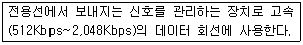
- 리피터(Repeater)
- 브리지(Bridge)
- CSU(Channel Service Unit)
- DSU(Digital Service Unit)
(정답률: 21%)
32. ISDN 채널의 종류 중, D채널에 대한 설명으로 가장 거리가 먼 것은?
- 사람의 음성, 오디오, 비디오, 등의 데이터를 전송하는 역할을 담당한다.
- 사용자와 네트워크 장비 사이의 제어 정보를 교환한다.
- 16Kbps나 64Kbps 전송 속도는 일차군 접속서비스(PRI)에 사용된다.
- 64Kbps D 채널은 사용자의 요구 교환 신호의 특성을 기록한다.
(정답률: 25%)
33. 다음 중 공중 통신 사업자로부터 회선을 임대 하여 데이터를 전송하는 통신망은?
- 근거리 통신망(LAN)
- 도시권 정보 통신망(MAN)
- 광역 통신망(WAN)
- 부가가치 통신망(VAN)
(정답률: 49%)
2과목: 인터넷 자원 탐색
34. 다음 중 인터넷 익스플로러의 InPrivate 브라우징 실행 시, 미치는 영향이 잘못 짝지어진 것은?
- 쿠키 : 메모리에 저장된 후, 브라우저 종료 시 삭제됨.
- 웹페이지 기록 : 임시정보가암호화되어저장됨.
- 피싱방지캐시 : 임시정보가암호화되어 저장됨.
- 문서 개체 모델(DOM) 저장 : 일반적인 쿠키와 마찬가지로 창이 닫힌 후에는 보관되지 않음.
(정답률: 47%)
35. 다음 중 구글 크롬의 시크릿 모드에 대한 설명으로 가장 거리가 먼 것은?
- 시크릿 모드를 사용하는 동안에는 모서리에 시크릿 아이콘이 표시된다.
- 시크릿 모드에서 작성된 쿠키는 열려 있는 창을 닫으면 암호화 되어 저장된다.
- 시크릿 모드 실행을 위한 단축키는 Ctrl + Shift + N 이다.
- 시크릿 모드 창을 닫더라도 다운로드한 파일이나 생성한 북마크는 모두 삭제되지 않는다.
(정답률: 64%)
36. 다음에서 설명하는 웹 브라우저는 무엇인가?
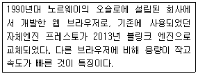
- 첼로
- 파이어폭스
- 오페라
- 핫자바
(정답률: 67%)
37. 다음은 인터넷 익스플로러의 [인터넷 옵션]-[보안] 메뉴의 신뢰할 수 있는 사이트의 보안 설정에 관한 설명 중 어떤 수준에 해당 되는가?
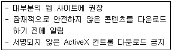
- 높음
- 약간 높음
- 보통
- 낮음
(정답률: 62%)
38. 구글 크롬 브라우저를 설치한 후, 북마크 및 설정 가져오기 기능을 이용하여 타 웹브라우저에서 가져올 수 있는 정보로 가장 거리가 먼 것은?
- 인터넷 사용 기록
- 즐겨찾기/북마크
- 인터넷 보안관련 설정
- 저장된 비밀번호
(정답률: 43%)
39. 다음 설명은 파이어폭스 브라우저의 기능 중, 어떠한 것에 해당되는가?
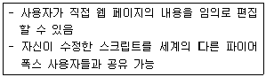
- Greasemonkey
- Web Developer
- Performancing
- IE-Tab
(정답률: 47%)
40. 다음 중, 나머지와 성격이 다른 웹브라우저는?
- 모자익
- 첼로
- 링스
- 핫자바
(정답률: 42%)
41. 다음은 웹 브라우저에서 제공하는 서비스 중 어떠한 것에 해당하는가?
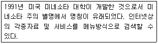
- Gopher
- Usenet
- Telnet
- WWW
(정답률: 47%)
42. 크롬 브라우저에서 현재 실행되고 있는 확장 프로그램 및 탭을 관리하는 작업관리자를 실행하는 단축키는?
- Ctrl + Shift + S
- Alt + Esc
- Shift + Esc
- Ctrl + Shift + I
(정답률: 36%)
43. 인터넷 익스플로러가 사용 불가능한 상태에 빠질 경우, 기본 설정으로 복원하기 위한 경로는?
- [도구]-[인터넷 옵션]-[고급]
- [도구]-[인터넷 옵션]-[일반]
- [도구]-[추가 기능 관리]
- [도구]-[호환성 보기 설정]
(정답률: 47%)
44. 다음 중 인터넷 익스플로러의 [파일]-[속성] 메뉴에서 확인할 수 없는 항목은?
- 프로토콜
- 크기
- 페이지 소스
- 주소
(정답률: 30%)
45. 다음 중 파이어폭스 브라우저의 아이콘과 그에 대한 기능이 잘못 짝지어진 것은?
- : 부가기능
- : 새로고침
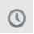
: 방문기록- : 다운로드
(정답률: 38%)
46. 다음 설명은 키워드 배치전략 중 어떠한 것에 해당하는가?
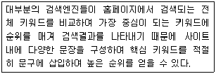
- 키워드 돌출
- 키워드 근접
- 키워드 무게
- 키워드 연관
(정답률: 37%)
47. 다음 빈 칸에 들어갈 숫자가 알맞게 짝지어진 것은?(단, 숫자는 소수점 둘째 자리에서 반올림 할 것.)
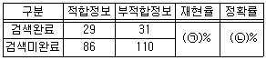
- ㉠-25.2, ㉡-48.3
- ㉠-43.7, ㉡-17.4
- ㉠-25.3, ㉡-43.7
- ㉠-17.4, ㉡-43.7
(정답률: 36%)
48. 다음 중 지능형 검색엔진 또는 멀티스레드 검색엔진이라고도 불리며, 자체 데이터베이스를 구축하지 않고 검색 로봇이 여러 개의 검색 엔진에서 정보를 찾은 뒤, 결과를 출력해주는 것은?
- 디렉토리 검색엔진
- 하이브리드 검색엔진
- 메타 검색엔진
- 키워드 검색엔진
(정답률: 47%)
49. 검색엔진의 구축 방식 중, 매뉴얼 인덱스 방식의 특징과 가장 거리가 먼 것은?
- 에이전트 인덱스 방식보다 상대적으로 정보의 질이 높다.
- 웹 사이트를 구축한 관리자가 수작업으로 사이트를 등록하는 방식이다.
- 에이전트 인덱스 방식보다 정보의 양이 많다.
- 이러한 방식은 주제별 검색엔진에서 많이 사용되는 편이다.
(정답률: 50%)
50. 다음 중 네이버에서 운영하고 있는 모바일 홈페이지 제작 서비스의 명칭은 무엇인가?
- modoo!
- 마이원
- 스토리볼
- 희망해
(정답률: 60%)
51. 검색엔진의 구성요소 중, 로봇을 일컫는 용어로 가장 거리가 먼 것은?
- Spider
- Crawler
- Catalog
- Scooter
(정답률: 41%)
52. 다음 중 검색엔진이 갖추어야 할 조건으로 가장 거리가 먼 것은?
- 검색 속도가 빨라야 한다.
- 검색 옵션이 다양해야 한다.
- 데이터베이스 업데이트 기간이 길어야 한다.
- 인터넷에 등록된 사이트 정보를 데이터베이스로 보유하고 있어야 한다.
(정답률: 78%)
53. 다음 중 검색엔진의 구성요소에 포함되지 않는 것은?
- 에이전트
- 색인기
- 로봇
- 검색엔진 소프트웨어
(정답률: 58%)
54. 다음 중 구글에서 운영하는 SNS 서비스로, 서클이라는 일종의 그룹 단위로 친구들을 관리할 수 있는 서비스는?
- 구글 플레이
- 구글 그룹스
- 구글 플러스
- 폴라
(정답률: 30%)
55. 다음 중 SK커뮤니케이션즈에서 운영하고 있으며, 문장이나 단락에 기술된 주제를 파악하고 이를 대상으로 검색하는 '시멘틱 검색'이 특징인 검색엔진은?
- Nate
- Zum
- Bing
- Paran
(정답률: 50%)
56. 다음 중 구글에서 제공하고 있는 이미지 뷰어로, 사용자가 사진을 업로드 한 뒤 편집하거나 여러 사람과 공유할 수 있는 서비스를 제공하는 것은?
- Picasa
- Vimeo
(정답률: 50%)
57. 구글 검색엔진을 이용하여 www.ihd.or.kr 사이트 내의 인터넷정보관리사에 대한 내용을 모두 찾으려고 한다. 이때 사용되는 검색 식으로 알맞은 것은?
- 인터넷정보관리사 -www.ihd.or.kr
- "인터넷정보관리사" -www.ihd.or.kr
- 인터넷정보관리사 site:www.ihd.or.kr
- -인터넷정보관리사 site:www.ihd.or.kr
(정답률: 43%)
58. 다음 빈 칸에 들어갈 주요 인터넷 정보원이 알맞게 짝지어진 것은?
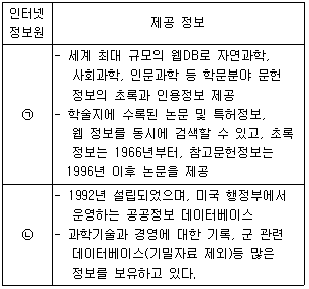
- ㉠-Science, ㉡-USPTO
- ㉠-SCOPUS, ㉡-Fed World
- ㉠-Cell, ㉡-Orbit
- ㉠-Cell, ㉡-USPTO
(정답률: 28%)
59. 다음 인터넷 정보원에 따른 분류 중, 2차 정보에 해당하는 것은?
- 학위 논문
- 단행본
- 연감
- 해설 요약
(정답률: 17%)
60. 다음 설명은 정보검색 기법 중, 어떤 검색 옵션에 대한 설명인가?
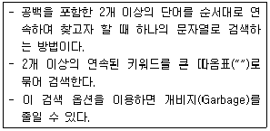
- 자연어 검색
- 절단 검색
- 구문 검색
- 필드 검색
(정답률: 43%)
61. 정보의 검색 결과에서 검색되었어야 함에도 불구하고, 부적절한 키워드 선정이나 연산자의 잘못된 사용으로 인해 검색 결과에서 빠져버린 정보를 뜻하는 말은?
- 불용어
- 개비지
- 시소러스
- 리키지
(정답률: 43%)
62. 다음 중 특정 사용자층을 대상으로 전문적인 정보를 제공하는 사이트를 가리키는 말은?
- 포털 사이트
- 보털 사이트
- 공식 사이트
- 허브 사이트
(정답률: 43%)
63. 다음은 정보의 유형을 어떠한 기준으로 분류한 것에 해당하는가?
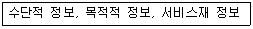
- 정보의 특성에 따른 분류 - 발생원
- 이용주체에 따른 분류 – 이용 목적성
- 정보의 특성에 따른 분류 - 발생빈도
- 이용주체에 따른 분류 – 효용성
(정답률: 16%)
64. 다음 중 인터넷 정보원에 대한 설명으로 가장 거리가 먼 것은?
- 검색엔진의 도움말은 수시로 접속하여 변화된 사항을 점검한다.
- 유즈넷, FTP, E-mail 내용도 검색 정보원이 될 수 있다.
- 검색엔진이 인터넷 상의 모든 정보를 찾아주는 것은 아니다.
- 전문 DB의 검색 대상을 정확히 파악하고 검색에 임해야 한다.
(정답률: 40%)
65. 다음 중 검색 엔진의 검색 결과에서 상위에 랭크하기 위해 한 페이지 내에 같은 키워드를 반복해서 입력하는 행위를 가리키는 말은?
- 스니핑
- 시소러스
- 스패밍
- 로케이션
(정답률: 58%)
66. 정보 관리사의 역할 중, 수집된 자료나 정보를 필요한 사람에게 제공하는 것은 어떠한 것에 해당하는가?
- 정보의 균등 분배자
- 정보 전문가
- 정보 분석가
- 정보 중개인
(정답률: 54%)
3과목: 인터넷 윤리
67. 다음은 인터넷 윤리의 기능 중, 어떠한 것에 해당하는가?
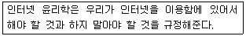
- 예방윤리
- 변혁윤리
- 책임윤리
- 처방윤리
(정답률: 43%)
68. 다음 중 버지니아 셰어의 네티켓 핵심 원칙과 가장 거리가 먼 것은?
- 온라인상의 자신을 근사하게 만들어라.
- 실제 생활과 온라인상의 기준과 행동은 엄격하게 구분하라.
- 전문적인 지식을 공유하라.
- 논쟁은 절제된 감정아래 행하라.
(정답률: 55%)
69. 다음 중 공개자료실 네티켓으로 가장 거리가 먼 것은?
- 서버의 부하를 고려하여 중복 자료를 올리지 않는다.
- 통신 속도를 고려하여 용량이 큰 파일은 되도록 분할하여 올리지 않는다.
- 통신량이 많은 시간대를 피하여 자료를 올린다.
- 건전한 통신문화를 위해 음란물을 올리지 않는다.
(정답률: 66%)
70. 다음 중 e-mail에 대한 네티켓으로 가장 거리가 먼 것은?
- 주요 요점을 나타낼 때에는 단어 주변에 * 를 사용하고, 책 제목 등에는 _을 사용한다.
- 매일 e-mail을 체크하고, 중요하지 않은 것은 가급적 빨리 삭제한다.
- 한 행의 길이는 너무 길지 않게 작성하고, 수신자가 이해하기 쉽도록 제어문자를 주로 활용한다.
- 줄 간격을 지나치게 넓게 하여 크기만 늘리는 식의 메시지 작성은 삼가야 한다.
(정답률: 45%)
71. 다음에서 설명하고 있는 사이버 범죄 유형은?
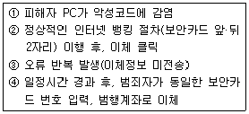
- 피싱
- 메모리 해킹
- 파밍
- 스미싱
(정답률: 32%)
72. 다음 중 바이러스의 발전단계를 연대별로 바르게 나열한 것은?
- 원시형→은폐형→암호화→매크로→갑옷형
- 원시형→갑옷형→은폐형→암호화→매크로
- 원시형→암호화→매크로→갑옷형→은폐형
- 원시형→암호화→은폐형→갑옷형→매크로
(정답률: 32%)
73. 다음 설명에 해당하는 용어는 무엇인가?
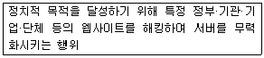
- 네카시즘
- 핵티비즘
- 인포데믹스
- 스푸핑
(정답률: 49%)
74. 다음 중 사이버 성폭력과 성희롱 예방을 위한 행동으로 가장 거리가 먼 것은?
- 내용 선택을 도와주는 프로그램 등을 사용한다.
- 오프라인에서처럼 상대방을 존중한다.
- 온라인을 통해 알게 된 사람을 만날 때는 반드시 주위에 미리 알린다.
- 원치 않는 메일 수신 시, 반드시 거부의사를 답장으로 밝힌다.
(정답률: 63%)
75. 다음 중 킴벌리 영이 분류한 인터넷 중독의 유형으로 가장 거리가 먼 것은?
- 사이버 교제 중독
- 네트워크 강박증
- 인터넷 게임 중독
- 컴퓨터 중독
(정답률: 29%)
76. 다음 중 인터넷 게임 중독 예방을 위해 일정 시간이상 이용을 할 경우, 아이템 취득이나 경험치를 낮추는 등의 조치를 취하는 제도는 무엇인가?
- 쿨링오프 제도
- 셧다운 제도
- 피로도 시스템
- 게임시간 선택제
(정답률: 55%)
77. 다음 중 청소년 인터넷 게임중독 척도에서 고위험 사용자에 해당하는 내용이 알맞게 짝지어진 것은?
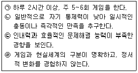
- ㉠,㉡,㉢
- ㉡,㉢
- ㉠,㉢
- ㉡,㉣
(정답률: 42%)
78. 다음 중 인터넷 중독의 원인과 가장 거리가 먼 것은?
- 새로운 자아의 구현
- 재미와 호기심
- 익명성
- 대면성
(정답률: 64%)
79. 다음 중 인터넷에 중독되어 컴퓨터 사용을 중단하기가 점점 힘들어지며, 종전보다 더 많은 시간을 할애하여야 만족을 느끼는 증세는?
- 내성
- 탈억제
- 의존성
- 금단현상
(정답률: 64%)
80. 다음 중 능동적 중독과 가장 거리가 먼 것은?
- 인터넷
- 스마트폰
- 컴퓨터 게임
- 비디오
(정답률: 69%)
도메인 네임과 디렉터리명은 대·소문자의 구별이 없는 이유는, 인터넷에서 사용되는 주소는 모두 영문 알파벳으로 이루어져 있기 때문이다. 따라서 대문자와 소문자를 구분하지 않아도 주소를 구분할 수 있도록 설계되었다. 예를 들어, "google.com"과 "GOOGLE.COM"은 동일한 주소로 인식된다.